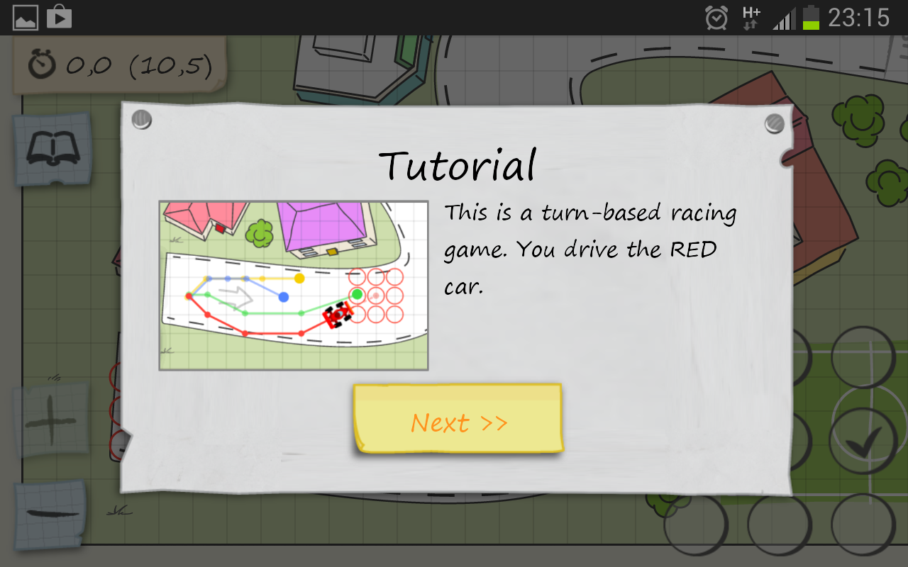
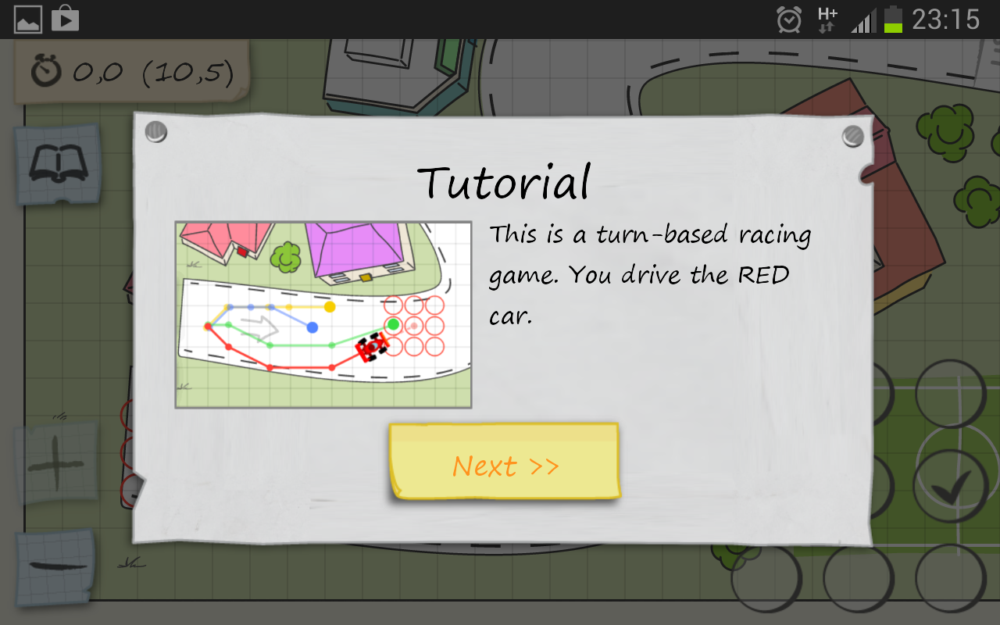

Herbe (symbole : '.')
Quand le véhicule est sur de l'herbe, les valeurs absolues de Vx et Vy sont diminuées de 1 (si elles sont > 1).Accident (crash) (symbole : 'x')
Lors d'un accident, une pénalité de sur le temps de parcours de √(x ² + y ²) est ajoutée.Eau (symbole : 'o')
Lorsque le véhicule est sur de l'eau, l'accélération est nulle (Ax = Ay = 0).Bonus
Interface graphique
Utilisez les bibliothèques aIntelligence Artificielle
Faites en sorte qu'il soit possible de jouer contre l'ordinateur et que celui-ci joue le mieux possible, y compris sur de nouveaux circuits.à la fin du projet, il y aura une compétition entre les AI des groupes qui auront réussi à en programmer.
Grand Prix
Faites plus de 5 pistes pour y jouer.Jeu en réseau
Utilisez des sockets (ou un mode "serveur web"?) pour permettre de jouer en réseau.Autres fonctionnalités
- Tours: Plusieurs tours sur un circuit, avec du carburant (consommé par chaque accélération) et arrêts au stand pour remplir un réservoire.- Collisions : Les véhicules ne peuvent pas être à la même place en même temps.
- Surprises sur la route : À vous d'imaginer !
- Effets sonores
- ...
Exemples de circuits
Ligne simple 2 Line simple avec tournant Tournant simple Piste de Sonoma France, Singapour, USA, Sidney, Dakar , Brazil à venir …Formula 0b1
 

À chaque tour t, chaque véhicule est situé à une position P(t) repérée par un couple de coordonnées (Px, Py) et a une vitesse V(t) de coordonnées (Vx, Vy). À chaque tour, le conducteur d'un véhicule choisit une accélération A (Ax, Ay) ∈ {-1,0,1}² et V(t+1)= V(t)+A(t), P(t+1)=P(t)+V(t+1). L'objectif est de suivre le meilleure trajectoire !

 À chaque déplacement, la position du véhicule est modifiée par le (nouveau) vecteur vitesse.
À chaque déplacement, la position du véhicule est modifiée par le (nouveau) vecteur vitesse.